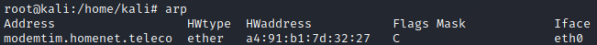

Address Resolution Protocol (ARP)
ARP(Address Resolution Protocol) protocol is used by computers to resolve hosts IP addresses to Network Interface Card(NIC) MAC addresses.
ARP has been developed to be a quick way to match Layer 3 network addresses (IP address) with Layer 2 addresses (MAC addresses)
After performing ARP prompt, hosts store MAC addresses in their ARP cache table to avoid useless ARP prompt
When a
host A wants to send a packet to another
host B both inside the same network, but know only the IP address of
host B and not the MAC address,
There is this procedure:
•
host A builds an
ARP request containing the IP address of
host B and FF:FF:FF:FF:FF:FF as destination MAC address
• The
switch with the MAC address received(FF:FF:FF:FF:FF:FF) will forward a packet to all its ports and so to every host in his network.
•
host B replies with an
ARP reply(telling which is its MAC address) to the
switch that forward the reply to
host A Further packets traffic from
host A to
host B will not need a new
ARP round. This thanks to the
ARP cache for the entries but has a TTL too for each of them, because the size of the device RAM is finite.
How check ARP cache
On
Linux:
 On
Windows:
on
*nix (es: OSX):
{kind=link}